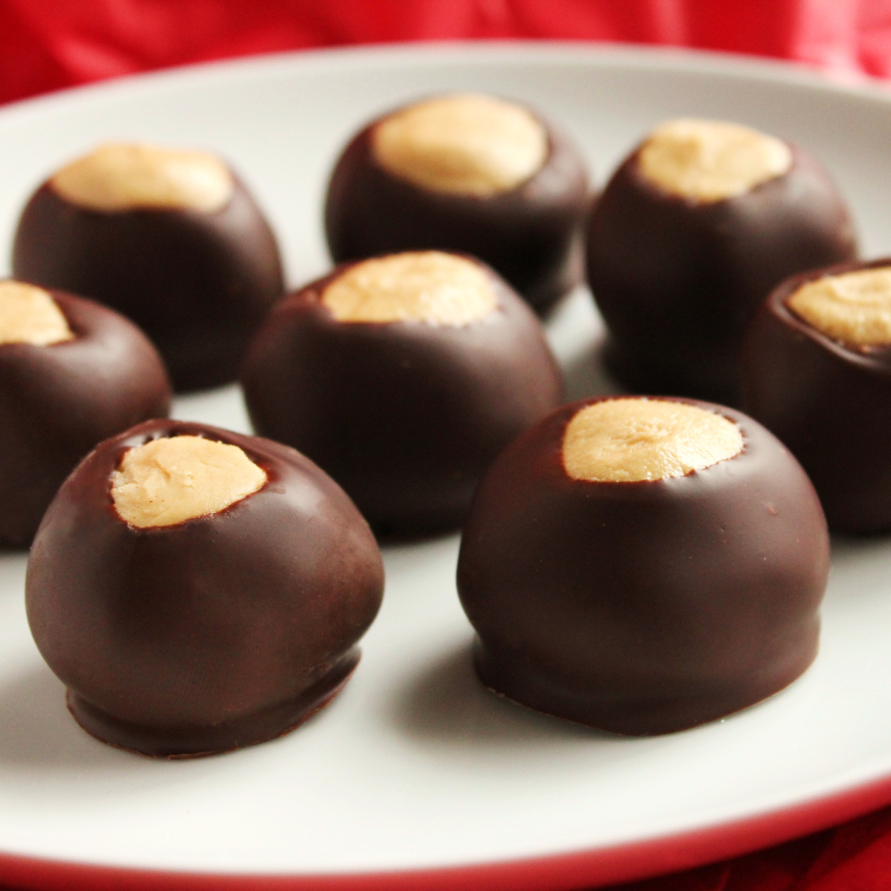

Description
Buckeye balls are chocolate-covered balls of peanut butter and confectioners' sugar.
Contains 204 calories; protein 3.7g; carbohydrates 22.8g; fat 12g; cholesterol 8.1mg; sodium 81.2mg per serving, 30 servings.
Ingredients
- 2 tablespoons shortening
- 1 ½ cups creamy peanut butter
- 4 cups sifted confectioners' sugar
- ½ cup butter, softened
- 1 teaspoon vanilla extract
- 6 ounces semi-sweet chocolate chips
Steps
- Line a baking sheet with waxed paper; set aside.
- Place confectioners' sugar, peanut butter, softened butter, and vanilla into a large bowl; mix together with
your hands to form a smooth stiff dough. Shape into balls using 2 teaspoons of dough for each ball. Place on
prepared baking sheet; refrigerate until ready to coat.
- Melt shortening and chocolate together in a metal bowl over a pan of lightly simmering water, stirring
occasionally, until smooth; remove from heat.
- Remove balls from the refrigerator; insert a wooden toothpick into a ball, and dip into melted chocolate.
Return to baking sheet, chocolate-side down, and remove toothpick. Repeat with remaining balls. Refrigerate
for 30 minutes to set.
Homepage